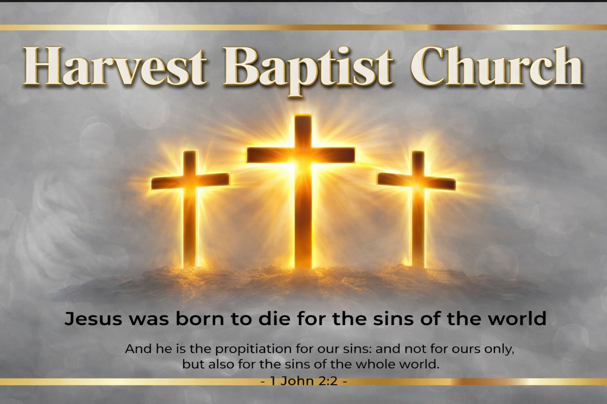

A place you can call home.
Block 50 Lot 9, Phase 3-A, Brgy. San Isidro, Zontaville, Padilla, Antipolo, Philippines, 187

We'd love to meet you! Learn what to expect on your first visit and how we can help you and your family find a place to call home.
Plan Your Visit
Resurrection Sunday: April 5, 2026
Join us for Sunday Worship Service at 9:00 AM - 11:00 AM.
The day marks the glorious celebration of Jesus Christ's resurrection, the cornerstone of the Christian faith. It is a declaration that the grave could not hold Him and death has been defeated forever.
Block 50 Lot 9, Phase 3-A, Brgy. San Isidro, Zontaville, Padilla, Antipolo, Philippines, 187
Get Directions
Use your phone camera to view this page quickly.